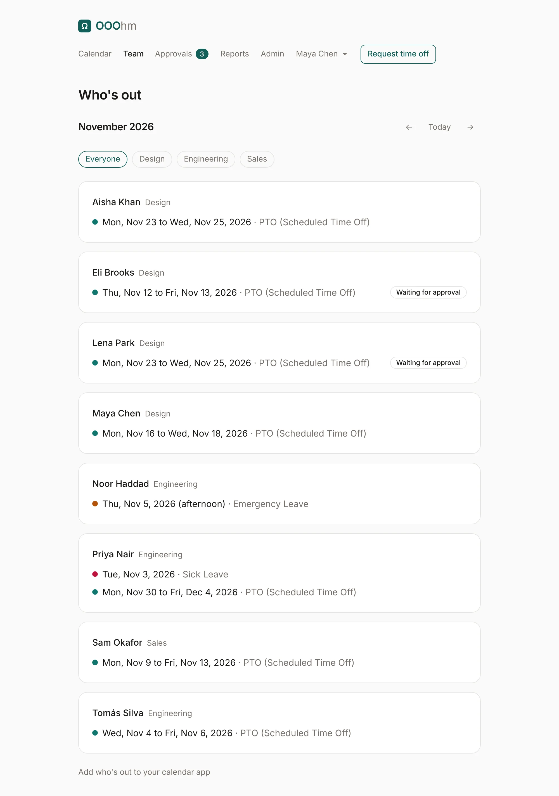
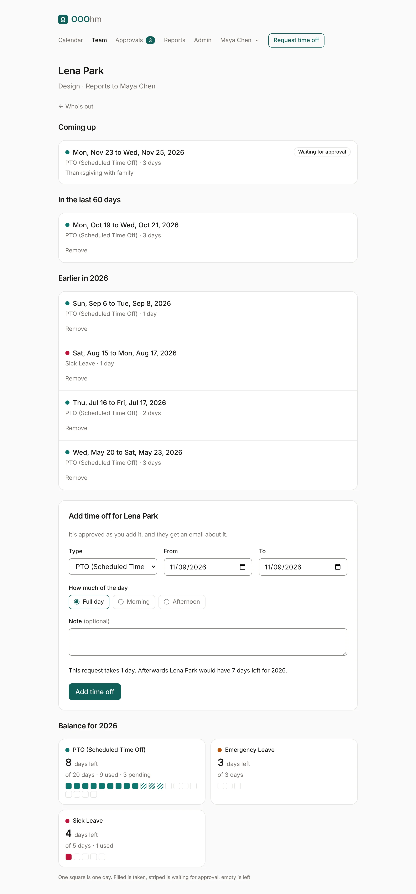

Who's out
Team in the top bar lists who's out in a month: each person, their department, and their time off that month. Time off still waiting for approval says so. The pills filter by department, and the arrows move a month.

You see the people your company lets you see (see Company). Add who's out to your calendar app at the bottom opens calendar subscriptions.
A person's page
Open a name to see their page: their department and manager, what's coming up, what they took in the last 60 days, and earlier this year.

Their manager and admins see more:
| Part | Who sees it |
|---|---|
| Notes on requests and the Balance | The person's manager (or department manager) and admins. An admin can turn this off for managers under Company. |
| Add time off for … | The person's manager and admins. It's approved as it's added, and the person gets an email. |
| Remove on approved time off | The person's manager and admins, to correct the record (for example, booked twice by mistake). It needs a reason, which the person gets by email, and the days go back into their balance. |
Adding time off for someone uses the request form, with the same preview of what it takes and leaves: This request takes 1 day. Afterwards Lena Park would have 7 days left for 2026.